ggplot(data = frog,
aes(x = clutch.volume)) +
geom_histogram() 
Visualize distributions of numeric data/variables using histograms and boxplots
Recognize when transforming data helps make asymmetric data more symmetric (log values)
Visualize distributions of categorical data/variables using frequency tables and barplots
![A cartoon of a fuzzy round monster face showing 10 different emotions experienced during the process of debugging code. The progression goes from (1) “I got this” - looking determined and optimistic; (2) “Huh. Really thought that was it.” - looking a bit baffled; (3) “...” - looking up at the ceiling in thought; (4) “Fine. Restarting.” - looking a bit annoyed; (5) “OH WTF.” Looking very frazzled and frustrated; (6) “Zombie meltdown.” - looking like a full meltdown; (7) (blank) - sleeping; (8) “A NEW HOPE!” - a happy looking monster with a lightbulb above; (9) “insert awesome theme song” - looking determined and typing away; (10) “I love coding” - arms raised in victory with a big smile, with confetti falling.](../img_slides/debugging.png)
In evolutionary biology, parental investment refers to the amount of time, energy, or other resources devoted towards raising offspring.
We will be working with the frog dataset, which originates from a 2013 study2 about maternal investment in a frog species. Reproduction is a costly process for female frogs, necessitating a trade-off between individual egg size and total number of eggs produced.
Researchers were interested in investigating how maternal investment varies with altitude. They collected measurements on egg clutches found at breeding ponds across 11 study sites; for 5 sites, the body size of individual female frogs was also recorded.
| altitude | latitude | egg.size | clutch.size | clutch.volume | body.size | |
|---|---|---|---|---|---|---|
| 1 | 3,462.00 | 34.82 | 1.95 | 181.97 | 177.83 | 3.63 |
| 2 | 3,462.00 | 34.82 | 1.95 | 269.15 | 257.04 | 3.63 |
| 3 | 3,462.00 | 34.82 | 1.95 | 158.49 | 151.36 | 3.72 |
| 150 | 2,597.00 | 34.05 | 2.24 | 537.03 | 776.25 | NA |
NA means the measured value for body size in clutch #150 is missing
ggplot

We can make a histogram of clutch volume or clutch size:
ggplot(data = frog,
aes(x = clutch.volume)) +
geom_histogram()
ggplot(data = frog,
aes(x = clutch.size)) +
geom_histogram() 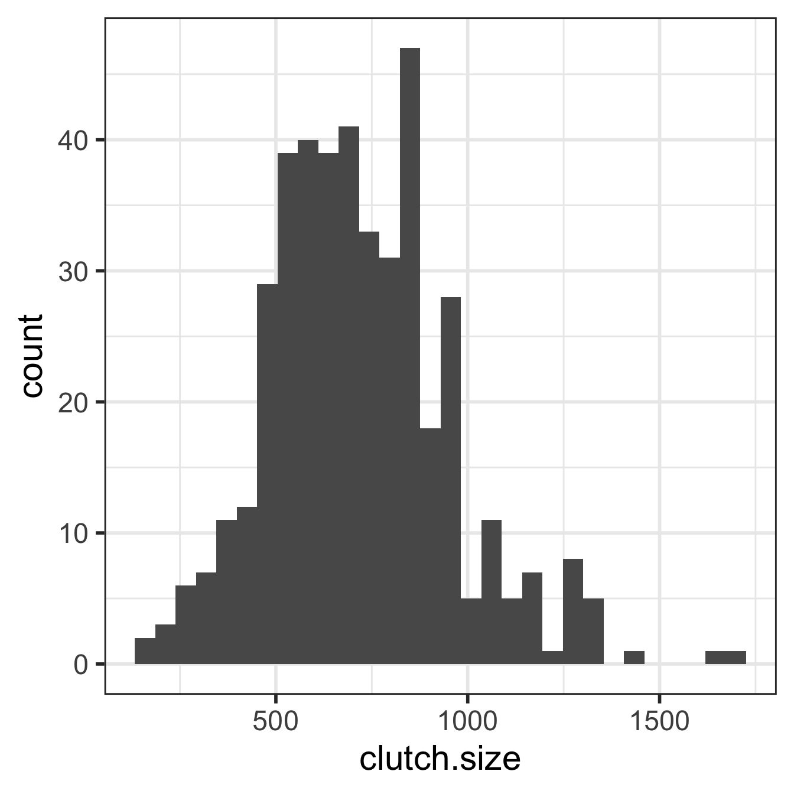

When working with strongly skewed data, it can be useful to apply a transformation
Common to use the natural log transformation on skewed data
We typically just call this the “log transformation”
Especially for variables with many values clustered near 0 and other observations that are positive
Transformations are mostly used when we make certain assumptions about the distribution of our data
ggplot(data = frog,
aes(x = clutch.volume)) +
geom_histogram() 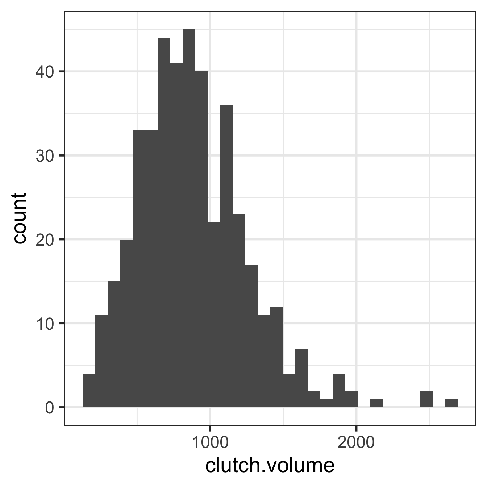
ggplot(data = frog,
aes(x = log(clutch.volume))) +
geom_histogram() 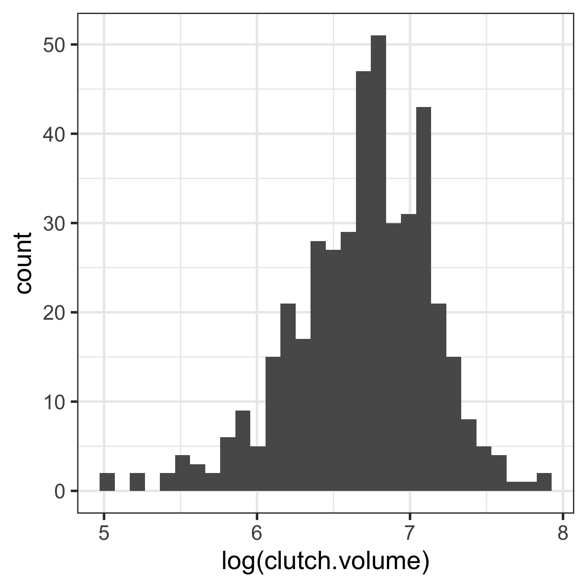
Knowing the age of a patient provides important information about the likelihood of hypertension
While the probability of hypertension of a randomly chosen adult is 0.29…
| Age Group | Hypertension | No Hypertension | Total |
|---|---|---|---|
| 18-39 years | 8836 | 112206 | 121042 |
| 40 to 59 years | 42109 | 88663 | 130772 |
| Greater than 60 years | 39917 | 21589 | 61506 |
| Total | 90862 | 222458 | 313320 |
In the US, individuals with developmental disabilities typically receive services and support from state governments.
Dataset dds.discr
For now, we are going to explore these data with R
See Section 1.7.1 in the textbook for more details
dds.discr dataset from oibiostat packageThe textbook’s datasets are in the R package oibiostat
Make sure the oibiostat package is installed before running the code below.
Load the oibiostat package and the dataset dds.discr
The code below needs to be run every time you restart R or render a Qmd file:
library(oibiostat)
data("dds.discr")
dds.discr using data("dds.discr"), you will see dds.discr in the Data list of the Environment window.glimpse()str() to get information about variable types in a dataset (in R03: R basics part 2)glimpse() from the tidyverse package (technically it’s from the dplyr package) to get information about variable types.glimpse() tends to have nicer output for tibbles than str()library(tidyverse)
glimpse(dds.discr) # from tidyverse package (dplyr)Rows: 1,000
Columns: 6
$ id <int> 10210, 10409, 10486, 10538, 10568, 10690, 10711, 10778, 1…
$ age.cohort <fct> 13-17, 22-50, 0-5, 18-21, 13-17, 13-17, 13-17, 13-17, 13-…
$ age <int> 17, 37, 3, 19, 13, 15, 13, 17, 14, 13, 13, 14, 15, 17, 20…
$ gender <fct> Female, Male, Male, Female, Male, Female, Female, Male, F…
$ expenditures <int> 2113, 41924, 1454, 6400, 4412, 4566, 3915, 3873, 5021, 28…
$ ethnicity <fct> White not Hispanic, White not Hispanic, Hispanic, Hispani…glimpse(dds.discr) # from tidyverse package (dplyr)Rows: 1,000
Columns: 6
$ id <int> 10210, 10409, 10486, 10538, 10568, 10690, 10711, 10778, 1…
$ age.cohort <fct> 13-17, 22-50, 0-5, 18-21, 13-17, 13-17, 13-17, 13-17, 13-…
$ age <int> 17, 37, 3, 19, 13, 15, 13, 17, 14, 13, 13, 14, 15, 17, 20…
$ gender <fct> Female, Male, Male, Female, Male, Female, Female, Male, F…
$ expenditures <int> 2113, 41924, 1454, 6400, 4412, 4566, 3915, 3873, 5021, 28…
$ ethnicity <fct> White not Hispanic, White not Hispanic, Hispanic, Hispani…oibiostat package, I can’t make these changesrename(): one of the first things I usually do
dds.discr1 = dds.discr %>%
rename(sex_MF = gender,
r_e = ethnicity)
glimpse(dds.discr1)Rows: 1,000
Columns: 6
$ id <int> 10210, 10409, 10486, 10538, 10568, 10690, 10711, 10778, 1…
$ age.cohort <fct> 13-17, 22-50, 0-5, 18-21, 13-17, 13-17, 13-17, 13-17, 13-…
$ age <int> 17, 37, 3, 19, 13, 15, 13, 17, 14, 13, 13, 14, 15, 17, 20…
$ sex_MF <fct> Female, Male, Male, Female, Male, Female, Female, Male, F…
$ expenditures <int> 2113, 41924, 1454, 6400, 4412, 4566, 3915, 3873, 5021, 28…
$ r_e <fct> White not Hispanic, White not Hispanic, Hispanic, Hispani…What is being measured on the vertical axes?
ggplot(data = dds.discr1,
aes(x = age)) +
geom_histogram() 
ggplot(data = dds.discr1,
aes(x = expenditures)) +
geom_histogram() 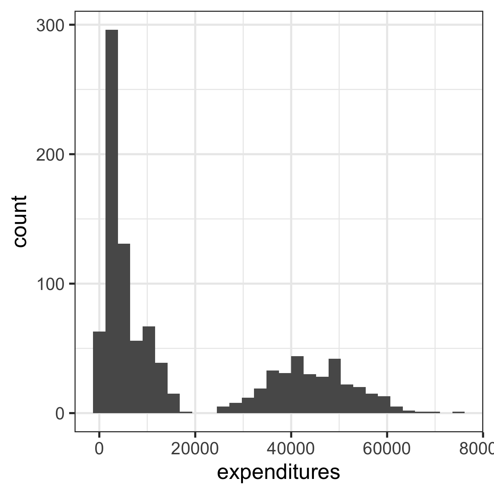
What is being measured on the vertical axes?
Tilt text so we can read it!
We can change labels!
Increase text size so we can read it!
dim(dds.discr)[1] 1000 6names(dds.discr)[1] "id" "age.cohort" "age" "gender" "expenditures"
[6] "ethnicity" length(unique(dds.discr$id)) # How many unique id's are there?[1] 1000str() structurestr() to get information about variable types in a dataset.tibble instead of a data.framestr(dds.discr) # base Rtibble [1,000 × 6] (S3: tbl_df/tbl/data.frame)
$ id : int [1:1000] 10210 10409 10486 10538 10568 10690 10711 10778 10820 10823 ...
$ age.cohort : Factor w/ 6 levels "0-5","6-12","13-17",..: 3 5 1 4 3 3 3 3 3 3 ...
$ age : int [1:1000] 17 37 3 19 13 15 13 17 14 13 ...
$ gender : Factor w/ 2 levels "Female","Male": 1 2 2 1 2 1 1 2 1 2 ...
$ expenditures: int [1:1000] 2113 41924 1454 6400 4412 4566 3915 3873 5021 2887 ...
$ ethnicity : Factor w/ 8 levels "American Indian",..: 8 8 4 4 8 4 8 3 8 4 ...
- attr(*, "spec")=
.. cols(
.. ID = col_integer(),
.. `Age Cohort` = col_character(),
.. Age = col_integer(),
.. Gender = col_character(),
.. Expenditures = col_integer(),
.. Ethnicity = col_character()
.. )glimpse()New: glimpse()
glimpse() from the tidyverse package (technically it’s from the dplyr package) to get information about variable types.glimpse() tends to have nicer output for tibbles than str()library(tidyverse)
glimpse(dds.discr) # from tidyverse package (dplyr)Rows: 1,000
Columns: 6
$ id <int> 10210, 10409, 10486, 10538, 10568, 10690, 10711, 10778, 1…
$ age.cohort <fct> 13-17, 22-50, 0-5, 18-21, 13-17, 13-17, 13-17, 13-17, 13-…
$ age <int> 17, 37, 3, 19, 13, 15, 13, 17, 14, 13, 13, 14, 15, 17, 20…
$ gender <fct> Female, Male, Male, Female, Male, Female, Female, Male, F…
$ expenditures <int> 2113, 41924, 1454, 6400, 4412, 4566, 3915, 3873, 5021, 28…
$ ethnicity <fct> White not Hispanic, White not Hispanic, Hispanic, Hispani…summary()summary() to get summary information about variablessummary(dds.discr) # base R id age.cohort age gender expenditures
Min. :10210 0-5 : 82 Min. : 0.0 Female:503 Min. : 222
1st Qu.:31809 6-12 :175 1st Qu.:12.0 Male :497 1st Qu.: 2899
Median :55384 13-17:212 Median :18.0 Median : 7026
Mean :54663 18-21:199 Mean :22.8 Mean :18066
3rd Qu.:76135 22-50:226 3rd Qu.:26.0 3rd Qu.:37713
Max. :99898 51+ :106 Max. :95.0 Max. :75098
ethnicity
White not Hispanic:401
Hispanic :376
Asian :129
Black : 59
Multi Race : 26
American Indian : 4
(Other) : 5 tbl_summary(): summary tabletbl_summary() from the gtsummary package to get summary information# library(gtsummary)
tbl_summary(dds.discr)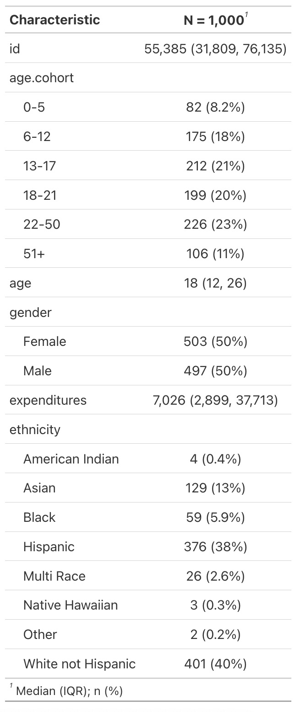
ggplot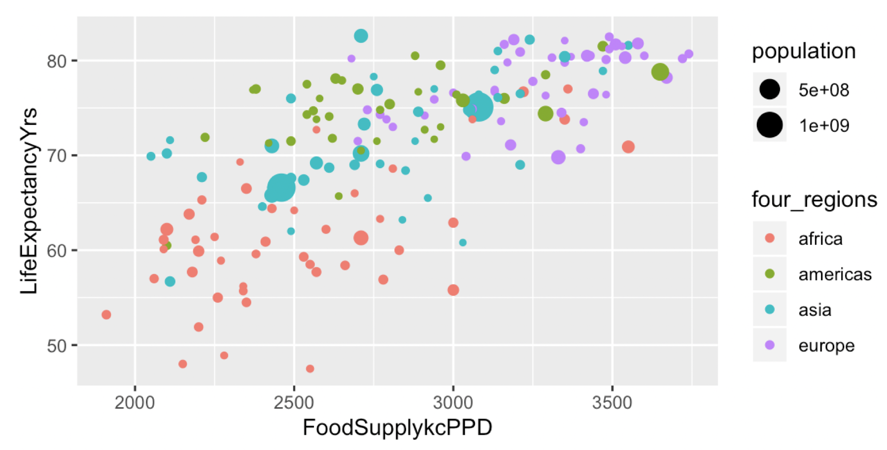
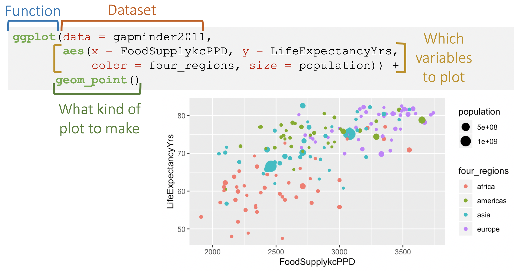
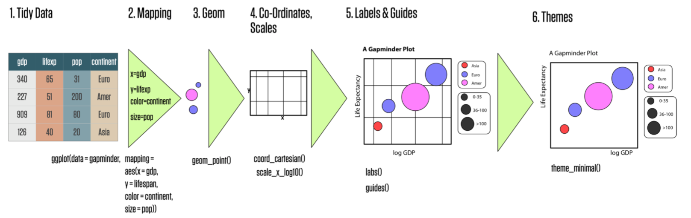
What is being measured on the vertical axes?
ggplot(data = dds.discr,
aes(x = age)) +
geom_histogram() 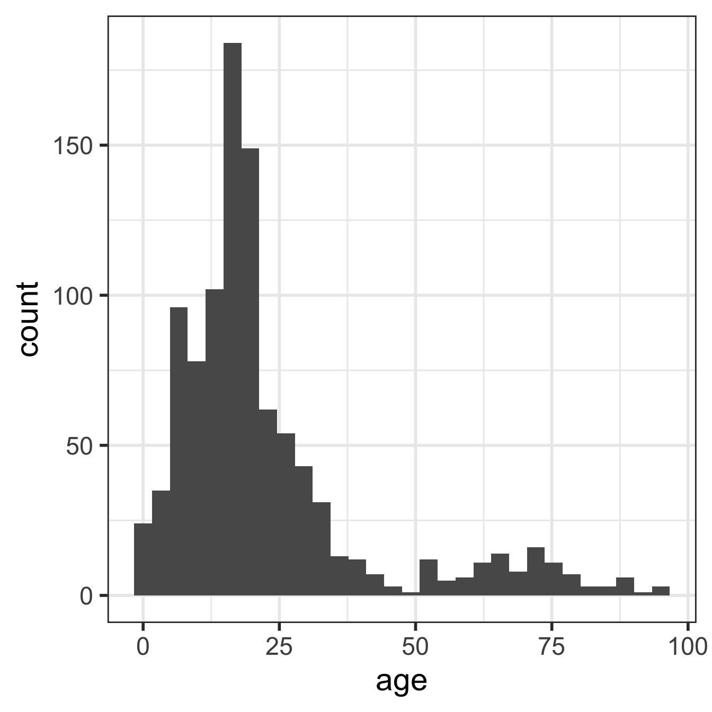
ggplot(data = dds.discr,
aes(x = expenditures)) +
geom_histogram() 
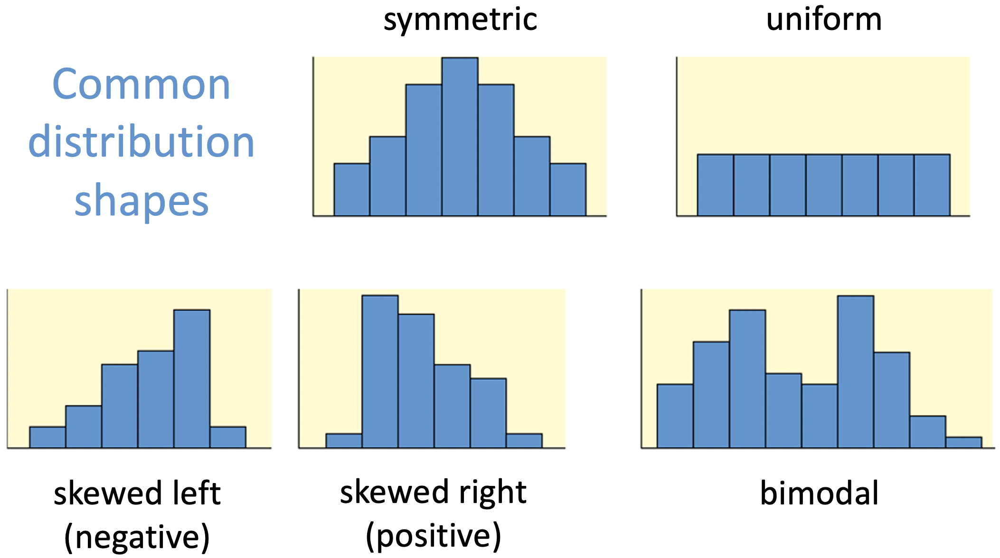
What is being measured on the vertical axes?
No outliers:
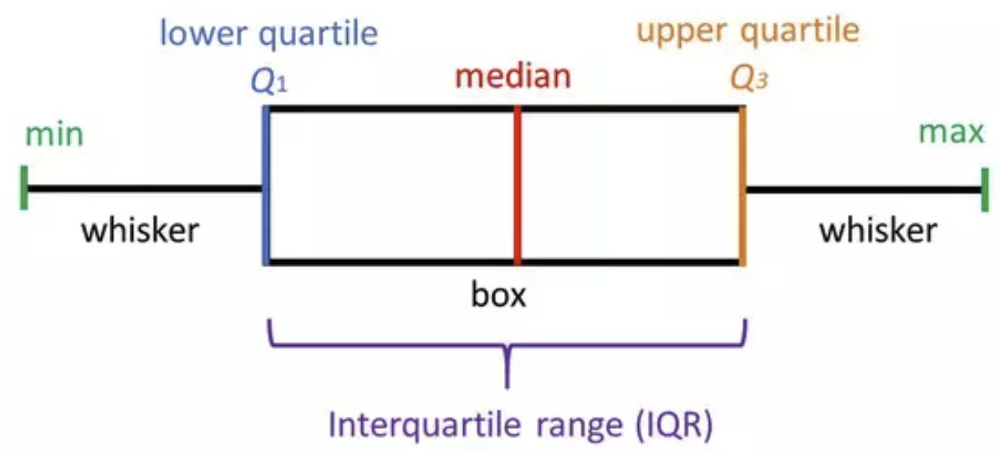
With outliers:
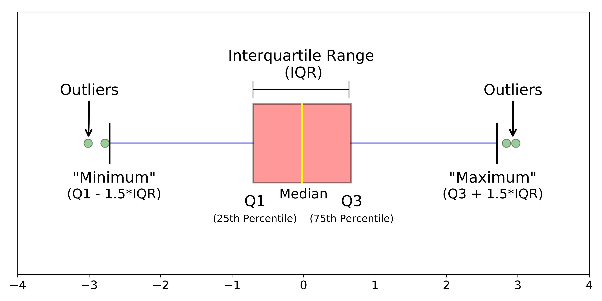
Chen, W., et al. Maternal investment increases with altitude in a frog on the Tibetan Plateau. Journal of evolutionary biology 26.12 (2013): 2710-2715.
↩︎